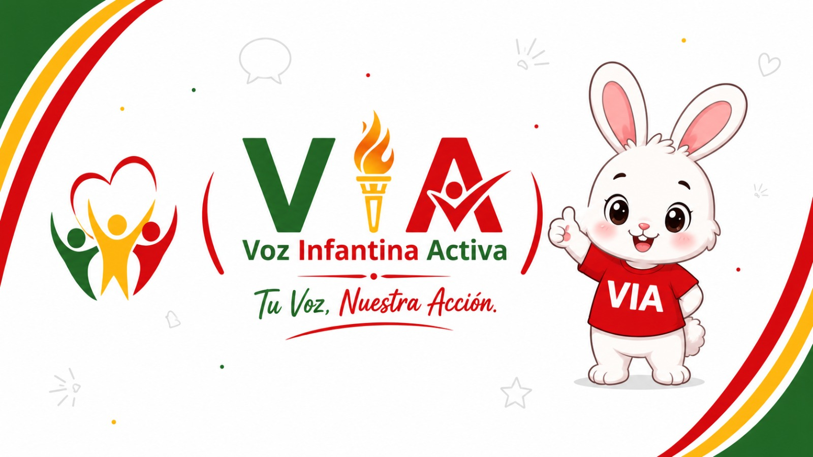

VIA (Voz Infantil Activa) es la Lista 2, un equipo de estudiantes que nace del deseo de generar un cambio positivo en la comunidad educativa del Colegio Nicolás Infante Díaz.
Creemos que una buena educación no solo se basa en el aprendizaje académico, sino también en el bienestar emocional, el respeto y la unión entre todos los estudiantes.
Nuestro principal objetivo es priorizar la salud mental de los estudiantes, promoviendo un ambiente escolar donde cada voz sea escuchada, cada opinión sea valorada y cada persona se sienta acompañada.
Queremos demostrar que los cambios reales no se logran únicamente con promesas, sino con acciones concretas que beneficien a toda la comunidad estudiantil.
En VIA creemos en el trabajo en equipo, la empatía, la inclusión y el compromiso. Como Lista 2, trabajaremos con responsabilidad, transparencia y dedicación para construir un mejor Colegio Nicolás Infante Díaz.
Creemos que cada estudiante merece ser escuchado. Valoramos las ideas, opiniones y necesidades de toda la comunidad educativa porque cada voz puede generar un cambio positivo.
Promovemos el respeto, la empatía y la buena convivencia para construir un colegio donde todos puedan sentirse seguros, valorados e incluidos.
Trabajamos para que ningún estudiante se sienta excluido. Queremos un colegio unido donde todos participen sin importar sus diferencias.
Nuestro compromiso es convertir las ideas en acciones reales que mejoren la vida estudiantil y fortalezcan el bienestar de nuestra comunidad.